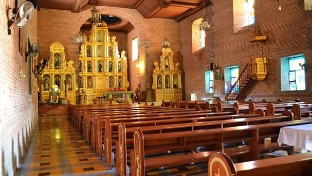

Saint John The Baptist Church
Liliw was established as a reduccion by Franciscan priests Juan de Plasencia and Diego Oropesa in 1578, a Spanish policy that forces smaller settlements into one larger town. The locals used to go to Nagcarlan to attend mass until they were given their own church. It was annexed as a visita of Nagcarlan until it became an independent parish with Father Miguel de San Lucas as the first parish priest in 1605 by the Franciscan missionaries. The first church was built in wood in 1620. A stronger stone church was built from 1643 to 1646 and was partially destroyed during the 1880 Luzon earthquake. It was reconstructed in 1885 and was partially burned on April 6, 189
One of the must-see heritage sites in Laguna is the St. John the Baptist Church, also known as Liliw or Lilio Church. It is a 400-year-old Laguna church that majestically stands in Liliw town, the Tsinelas Capital of the Philippines.
Your trip to Liliw will not be complete without dropping by the sandal/shoe shops along the highway. Apart from local handicrafts and slippers, Liliw is also known for its sweet delicacies like espasol (toated rice cake) and uraro (arrowroot cookies).
Alfombra From Laguna
The original wooden structure of the church was established in the early 16th century. Meanwhile, the edifices are composed of red bricks and rocks. In 1880, it was partially damaged by a massive earthquake in Luzon. Then, it underwent reconstruction in 1885. However, it was again partially burned on April 6, 1898.
In 1605, it became an independent parish with Father Miguel de San Lucas as the first parish priest. Its feast day, known as the Martyrdom of St. John the Baptist, is celebrated every August 29.
There are giant white statues lined up in front of the church. You can also find gazebos on both sides of the walkway. The church has a bell tower that features Baroque-inspired architecture from the Spanish era. Upon entering the church, you will witness a monumental altar, magnificent ceiling paintings, and glass murals.